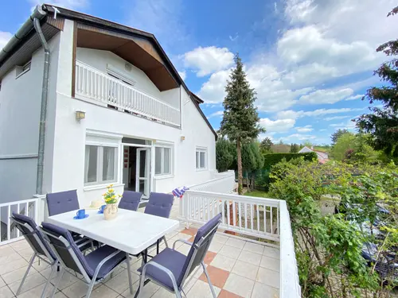

#110Huzd a kepet a sorrend modositasahozdandelion-szepvolgyi-source-001.webpszepvolgyi-001
betöltés…ismeretlen
SEO draft
approved: false
altHu: Szépvölgyi Vendégház terasz asztallal és székkel
titleHu: Szépvölgyi Vendégház terasz
captionHu: A Szépvölgyi Vendégház teraszán kényelmes ülőhelyek vannak egy asztal körül.
altEn: Szépvölgyi Guesthouse terrace with table and chairs
titleEn: Szépvölgyi Guesthouse terrace
captionEn: The terrace of Szépvölgyi Guesthouse has comfortable seating around a table.